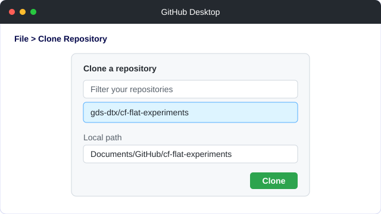
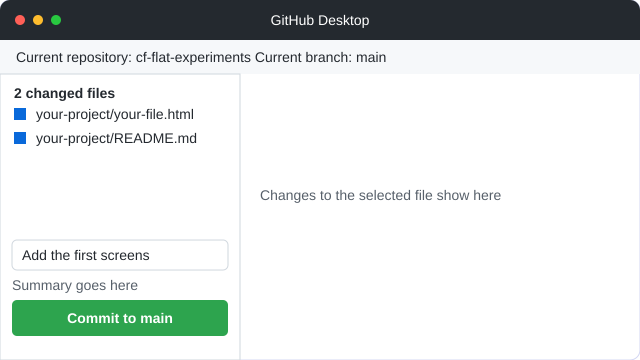
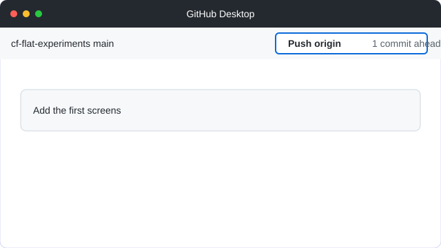

How we prototype
Build a prototype by talking to Claude in a folder on your laptop. Push it with GitHub Desktop and you get a live link to send to anyone. This walk-through covers the one-off setup, the workflow we follow and how to publish.
Set up once
You need the Claude desktop app, GitHub Desktop and access to our repo. It takes about ten minutes and you only do it once.
Install Claude
Download the Claude desktop app from claude.ai/download and sign in. Claude Code, where we build, is the Code tab inside it.
Install GitHub Desktop
Download GitHub Desktop and sign in with your GitHub account. It keeps your copy of the repo and does the pushing later, so you never need the command line.
Get access to the repo
Ask Pete Hallett to add your GitHub account to gds-dtx/cf-flat-experiments. Until that is done, the repo will not appear in the next step.
Clone it to your laptop
In GitHub Desktop choose File, then Clone Repository, pick cf-flat-experiments and press Clone. It lands in a folder on your laptop, usually inside Documents/GitHub. The skills and our team rules come with it.

Open the folder in Claude Code
In Claude, open the Code tab and choose the folder you cloned. Pick the cloned folder itself, not the one above it, so the skills load.
Check it worked
Ask Claude this. It should name the prototyping skills.
Check
Which skills do you have for building prototypes?
Working outside the repo? Download the skills and unzip them into your own project, then copy CLAUDE.md across, because the skills lean on it for our rules.
unzip all-skills.zip -d .claude/skillsA workflow that bends
This is the order we usually work in. Treat it as a suggestion. Skip a step, repeat one or change the order when the work needs it. The prompts are starting points, so change the wording until it sounds like you.
Start with one choice. Use govuk-html-prototype for most things: workshops, concepts and testing an idea. It runs in any browser with nothing to install. Use govuk-prototype, the Prototype Kit, when a journey is going to developers as a spec. It needs Node.js.
Say what you are making
Name the service, who it is for and the need it meets. Name the skill too, so Claude does not guess.
Prompt
Prototype a service for reporting a change of address. Use govuk-html-prototype. List the screens and any branches before you build anything.
Agree the screens
Claude lists the screens and branches before it builds. Change the list here, while changing it costs nothing.
Let it build
It starts from the template and copies markup from components.html, so you get GOV.UK components and no invented class names.
Click through it
Open every screen from the "All screens" index and follow each branch and every Change link. Turn the design notes on to read the argument each screen makes.
Prompt
Add a branch for someone who has moved abroad. Say which screens it adds before you build them.
Run the review
design-review checks the journey, the Service Standard questions, the usability heuristics and WCAG 2.2 AA. It lists what fails and changes nothing until you ask.
Prompt
Run design-review on this prototype and list what fails. Don't fix anything yet.
Add the messages
If the prototype sends anything to a person, use government-communication to draft it and privacy-aware-communications to check what it reveals. govuk-content checks the wording against GOV.UK style.
Prompt
Draft the confirmation email for this journey with government-communication, then check what it reveals with privacy-aware-communications.
Preview it
Ask for a preview as an Artifact. It opens as a private page you can read in Claude and share from there. A single HTML file also opens straight from your folder in any browser.
CLAUDE.md. The team owns that file.Push it and get a shareable link
This is the part that makes a prototype shareable, and it is the same routine every time. The work stays on your laptop until you push it.
Commit your changes
Open GitHub Desktop. Your changed files are listed on the left. Write a short summary of what changed in the box at the bottom left, then choose Commit to main. You can also ask Claude to commit this.

Push origin
Press Push origin in the top bar. That sends your commit to GitHub.

Wait a few minutes
GitHub rebuilds the site after every push. If your link shows a not found page, wait a little and refresh.
Open your live link
The link is the site address, then your project folder, then your file name.
The link
https://gds-dtx.github.io/cf-flat-experiments/your-project/your-file.html
Send it to anyone who needs to click through. Anything on main is published, so check there is no real personal data in it first.
What every prototype has
The skills build these in, so you rarely have to ask.
- The prototype warning and phase banner. Every screen says "Prototype: this is not a real service".
- Design notes. Off by default. Each one states the argument the screen is making.
- An "All screens" index. Any single screen opens directly in a workshop.
- Invented details only. Dummy details that look real but are not. Never a real person, licence, NHS or National Insurance number.
- WCAG 2.2 AA. Built from GOV.UK components, with a label on every input and everything working by keyboard.